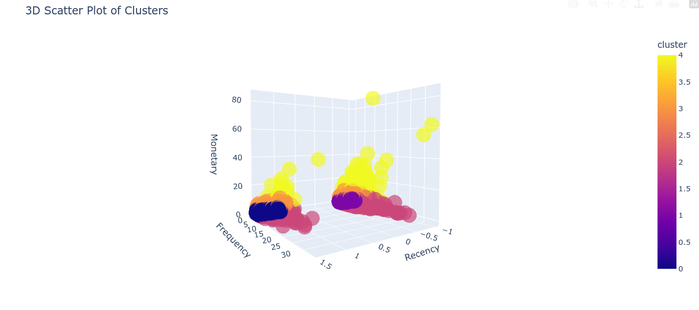

Customer Segmentation Model Based On RFM Analysis
In this RFM analysis, we employed K-Means clustering to segment our customer base into distinct groups. Through the elbow technique, we determined that five clusters optimally capture the underlying patterns in our data. To ensure fair comparison, we applied standard scaling to our features, preventing any single attribute from dominating the clustering process.
The resulting five clusters provide a nuanced understanding of our customers, enabling targeted marketing strategies and personalized engagement. By examining the characteristics of each cluster, we can identify opportunities to enhance customer loyalty, stimulate growth, and improve overall shopping experiences.
How Good is the Model?
The Model has a high Calinski-Harabasz Index. Below is the depiction of the clusters formed by the model. 
Interpretation of Results
-
Cluster 0: High recency, low frequency, low monetary value. This cluster might represent customers who have recently made a purchase, but don't buy frequently and don't spend much. We could call this cluster "Recent One-Time Buyers".
-
Cluster 1: Low recency, low frequency, low monetary value. This cluster might represent customers who haven't made a purchase recently, don't buy frequently, and don't spend much. We could call this cluster "Inactive Customers".
-
Cluster 2: Low recency, high frequency, low monetary value. This cluster might represent customers who don't make purchases recently, but when they do, they buy frequently and don't spend much. We could call this cluster "Frequent Low-Spenders".
-
Cluster 3: Low recency, moderate frequency, high monetary value. This cluster might represent customers who don't make purchases recently, but when they do, they spend a moderate amount of money. We could call this cluster "Moderate Value Customers".
-
Cluster 4: Low recency, high frequency, very high monetary value. This cluster might represent customers who don't make purchases recently, but when they do, they spend a lot of money and buy frequently. We could call this cluster "High-Value Frequent Buyers".